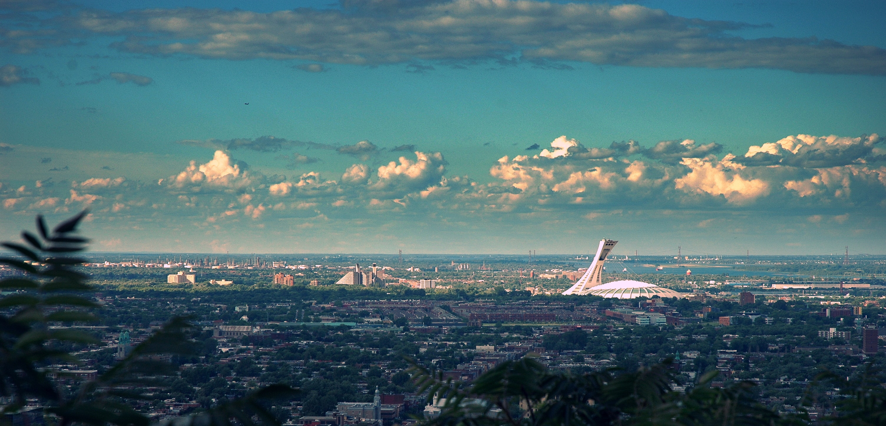
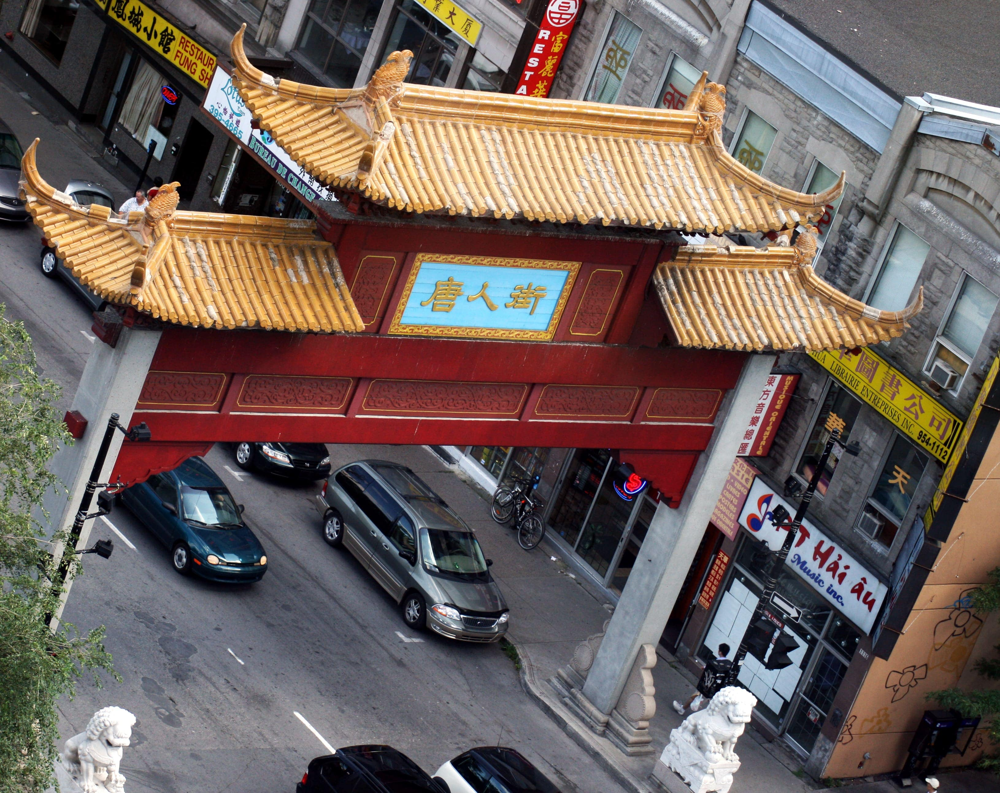
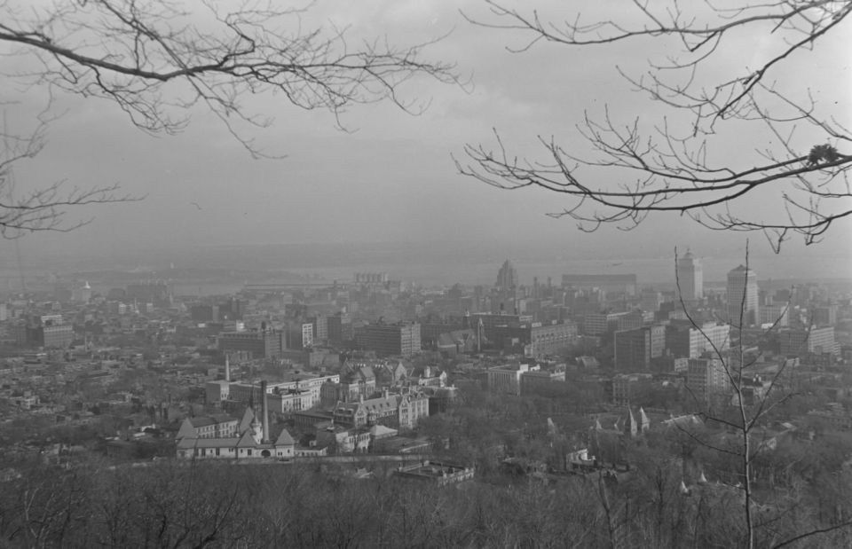
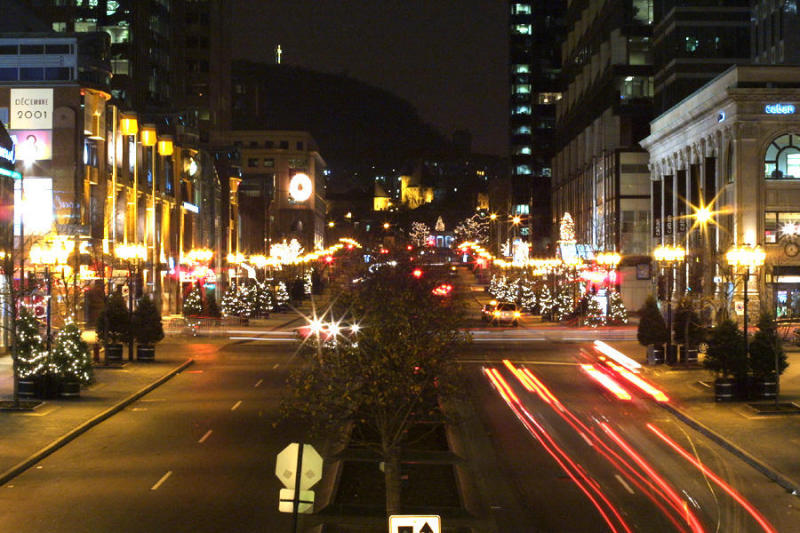
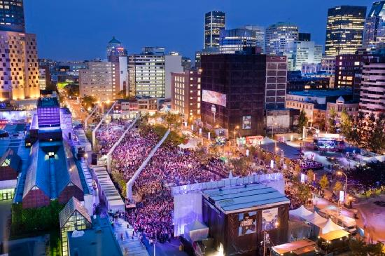

The city is composed of 19 large boroughs, subdivided into neighbourhoods. The boroughs are: Côte-des-Neiges–Notre-Dame-de-Grace, The Plateau Mount Royal, Outremont and Ville Marie in the centre; Mercier–Hochelaga-Maisonneuve, Rosemont–La Petite-Patrie and Villeray–Saint-Michel–Parc-Extension in the east; Anjou, Montréal-Nord, Rivière-des-Prairies–Pointe-aux-Trembles and Saint-Leonard in the northeast; Ahuntsic-Cartierville, L'Île-Bizard–Sainte-Geneviève, Pierrefonds-Roxboro and Saint-Laurent in the northwest; and Lachine, LaSalle, The South West and Verdun in the south.
|  |
| OlympicStadium |
The borough with the most neighbourhoods is Ville Marie, which includes downtown, the historical district of Old Montreal, Chinatown, the Gay Village, the Latin Quarter, the gentrified Quartier international and Cité Multimédia as well as the Quartier des Spectacles which is under development. Other neighbourhoods of interest in the borough include the affluent Golden Square Mile neighbourhood at the foot of Mount Royal and the Shaughnessy Village/Concordia U area home to thousands of students at Concordia University. The borough also comprises most of Mount Royal Park, Saint Helen's Island, and Notre-Dame Island.
The South West borough was home to much of the city's industry during the late 19th and early-to-mid 20th century. The borough included Goose Village and is home to the traditionally working-class Irish neighbourhoods of Griffintown and Point Saint Charles as well as the low-income neighbourhoods of Saint Henri and Little Burgundy.
Other notable neighbourhoods include the multicultural areas of Notre-Dame-de-Grâce and Côte-des-Neiges in the Côte-des-Neiges–Notre-Dame-de-Grace borough, and Little Italy in the borough of Rosemont–La Petite-Patrie and Hochelaga-Maisonneuve, home of the Olympic Stadium in the borough of Mercier–Hochelaga-Maisonneuve.
Architecture and cobbled streets in Old Montreal have been maintained or restored and are frequented by horse-drawn buggies carrying tourists. Old Montreal is accessible from the downtown core via the underground city and is served by several STM bus routes and Metro stations, ferries to the South Shore and a network of bicycle paths.
|  |
| Montreal'sChinaTown |
Old Montreal is a historic area southeast of downtown containing many attractions such as the Old Port of Montreal, Place Jacques-Cartier, Montreal City Hall, the Bonsecours Market, Place d'Armes, Pointe-à-Callière Museum, the Notre-Dame de Montréal Basilica, and the Montreal Science Centre.
The mountain is the site of Mount Royal Park, one of Montreal's largest greenspaces. The park, most of which is wooded, was designed by Frederick Law Olmsted, who also designed New York's Central Park, and was inaugurated in 1876.
 |
| Beaver Lake |
The mountain is home to two major cemeteries, Notre-Dame-des-Neiges (founded in 1854) and Mount Royal (1852). Mount Royal Cemetery is a 165 acres (67 ha) terraced cemetery on the north slope of Mount Royal in the borough of Outremont. Notre Dame des Neiges Cemetery is much larger, predominantly French-Canadian and officially Catholic.[107] More than 900,000 people are buried there.
Mount Royal Cemetery contains more than 162,000 graves and is the final resting place for a number of notable Canadians. It includes a veterans section with several soldiers who were awarded the British Empire's highest military honour, the Victoria Cross. In 1901 the Mount Royal Cemetery Company established the first crematorium in Canada.
|  |
| CityView from Mount |
Mount Royal Cemetery contains more than 162,000 graves and is the final resting place for a number of notable Canadians. It includes a veterans section with several soldiers who were awarded the British Empire's highest military honour, the Victoria Cross.
Downtown Montreal is the central business district of Montreal, Quebec, Canada.
The downtown region houses many corporate headquarters as well a large majority of the city's skyscrapers — which, by law, cannot be greater in height than Mount Royal in order to preserve the aesthetic predominance and intimidation factor of the mountain.
|  |
| McGill College |
Place Ville-Marie, an I. M. Pei-designed cruciform office tower built in 1962, sits atop an underground shopping mall that forms the nexus of Montreal's underground city, the world's largest, with indoor access to over 1,600 shops, restaurants, offices, businesses, museums and universities, as well as metro stations, train stations, bus terminals, and tunnels extending all over downtown.
Downtown is a busy hub of shoppers, office workers and students from McGill and Concordia universities. Chain stores and malls line Rue Sainte-Catherine, while Crescent Street is known for busy bars. Cultural sights here include the Montreal Museum of Fine Arts, with works spanning centuries, and the McCord Museum’s city history exhibits. Chinatown, marked by traditional gates, has casual eateries and food markets.
|  |
| Downtown,Montreal |
A number of museums can be found in or near Downtown Montreal, including the Canadian Centre for Architecture, McCord Museum, Montreal Museum of Contemporary Art, Montreal Museum of Fine Arts and Redpath Museum. Pointe-à-Callière Museum is more strictly in Old Montreal.